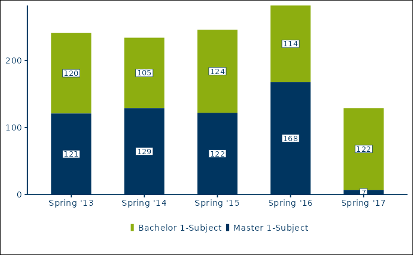

Vertical stacked bar chart in the RUB corporate design. The variables x_var, y_var and fill_var are required, all others are optional.
Usage
rub_plot_type_1(
df,
x_var,
x_var_label = NULL,
y_var,
y_axis_label = "",
fill_var,
fill_reverse = FALSE,
fill_label = NULL,
caption = "",
caption_prefix = "Quelle:",
filter_cutoff = 0.04,
facet_var = NULL,
color = RUB_colors["blue"],
palette_reverse = FALSE,
base_family = "RubFlama",
base_size = 11,
plot_width = 6.8
)Arguments
- df
Data frame
- x_var
Required variable name for the variable containing the discrete x-coordinates.
- x_var_label
Optional variable name for the character variable containing the names of the x variable, defaults to NULL.
- y_var
Required variable name for the variable containing the y-coordinates. Will be coerced to numeric with
as.numeric.- y_axis_label
Optional label for the y-axis, defaults to an empty string.
- fill_var
Variable name for the discrete variable which determines the groups to be stacked, e.g. degree.
- fill_reverse
Boolean indicating whether the order of the fill variable should be reversed, defaults to FALSE.
- fill_label
Optional variable name for the character variable containing the names of the fill variable, defaults to NULL.
- caption
Optional character containing the data source for the figure (prefix 'Quelle:' is automatically added).
- caption_prefix
Optional character containing the prefix for the caption, defaults to 'Quelle:'.
- filter_cutoff
Optional cutoff value for the suppression of data labels. By default, all values below 0.04 of the total value of the stacked bar chart are suppressed.
- facet_var
Optional variable name for the discrete variable to facet by, defaults to NULL.
- color
Color for font and borders, defaults to
RUB_colors["blue"], i.e. #003560.- palette_reverse
Optional boolean indicating whether the colors in the palette should be reversed, defaults to FALSE.
- base_family
base font family, defaults to RubFlama
- base_size
base font size, defaults to 11
- plot_width
Width of the plot in inches, defaults to 6.8
Examples
# Create test values for all three mandatory variables (x_var, y_var, fill_var).
df_t1_ex1 <- tibble::tribble(
~term, ~students, ~degree,
"Spring '13", 120, "Bachelor 1-Subject",
"Spring '14", 105, "Bachelor 1-Subject",
"Spring '15", 124, "Bachelor 1-Subject",
"Spring '16", 114, "Bachelor 1-Subject",
"Spring '17", 122, "Bachelor 1-Subject",
"Spring '13", 121, "Master 1-Subject",
"Spring '14", 129, "Master 1-Subject",
"Spring '15", 122, "Master 1-Subject",
"Spring '16", 168, "Master 1-Subject",
"Spring '17", 7, "Master 1-Subject",
)
# x_var is mapped to term, y_var to students, and the fill_var to degree.
# base_size increases the text sizes from the default, 11, to 14.
rub_plot_type_1(
df = df_t1_ex1,
x_var = term,
y_var = students,
fill_var = degree,
base_size = 14
)
